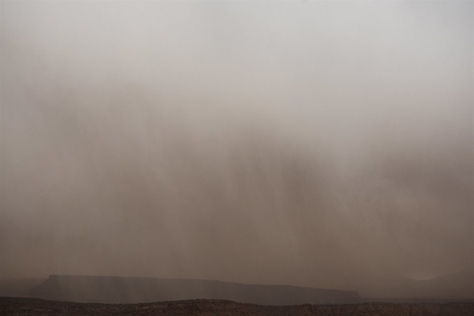

When planning a desert trip from Marrakesh or Fes to Erg Chebbi, most travelers picture silent dunes and clear horizons. However, the Sahara is a dynamic landscape, and strong spring and autumn winds can kick up sudden sandstorms that reduce visibility and alter daily operations.
At Route of the Dunes, we don't cancel tours at the first sign of a breeze, but we do have strict operational thresholds. Here is an honest look at how high winds affect camel treks, 4x4 transfers, and desert camp stays, and what we do to keep you safe and comfortable.
Recognizing Weather Thresholds
Not all desert wind is a sandstorm. A gentle breeze creates mesmerizing ripples on the crests, while moderate winds lift fine surface sand, creating a hazy fog close to the ground. True sandstorms involve sustained high-velocity gales that move entire dunes and strip paint from vehicles.
We monitor regional meteorological forecasts and local Berber guides' observations daily. If wind speeds exceed safe thresholds for desert navigation or camp stability, we pause departures from Merzouga village until conditions stabilize.
- Light winds: Surface haze, excellent for photography, minimal disruption.
- Moderate winds: Stinging sand particles, face coverings essential.
- Severe gales: Zero visibility, camp structures secured, travel paused.
Camp Life During High Winds
Staying in a luxury or standard desert camp during a windy night has distinct trade-offs. While our Berber tents are heavily anchored with wooden stakes and heavy canvas, fine desert dust will find its way through small gaps if the wind is howling.
During severe wind events, we keep guests in the main communal dining kasbah or sturdy permanent structures rather than outlying tents. Meals continue as planned, though outdoor stargazing is often replaced by fireside tea and conversation.
- Zip inner tent doors tightly to keep drifting sand out of bedding.
- Keep electronics sealed in waterproof, dustproof dry bags.
- Earplugs help block the sound of canvas flapping in strong gusts.
Camel Trekking and Activity Adjustments
Riding a camel into a headwind with blowing sand is genuinely unpleasant for both human and animal. Camels tolerate wind well, but getting sand whipped directly into your eyes and mouth ruins the experience.
If winds pick up before your trek, we substitute the camel ride with a 4x4 transfer to the camp, or wait out the worst of the afternoon gusts for a sunset ride once the air clears. Flexibility is essential when dealing with desert weather.
- Camel treks are paused if wind-driven sand limits visibility to under 50 meters.
- 4x4 vehicles are deployed to ferry guests directly to camp safely.
- Alternative local visits, such as Khamlia village, replace exposed dune activities.
Essential Packing for Windy Days
The single most important item in a Sahara packing list is a long scarf (shesh), which local guides will happily teach you how to wrap securely around your face. It protects your airways and eyes from fine abrasive dust.
Protecting your camera gear is equally critical. Never change lenses outdoors during a windy day; fine desert dust destroys camera sensors instantly. Keep phones and cameras in sealed pouches when walking across exposed ridges.
- Bring a traditional cotton scarf or buy one in Merzouga village.
- Wrap sensitive electronics in Ziploc bags or dedicated dry sacks.
- Wear wraparound sunglasses to prevent corneal irritation from blowing sand.
| Wind Condition | Operational Impact | |
|---|---|---|
| Level 1 | Gentle Breeze (10-20 km/h) | No impact; standard camel treks and desert camps operate normally. |
| Level 2 | Fresh Breeze (20-35 km/h) | Hazy air; face coverings advised; camel rides proceed with altered routes. |
| Level 3 | Strong Wind (35-50 km/h) | Exposed treks cancelled; 4x4 transfers used; indoor dining utilized. |
| Level 4 | Sandstorm / Gale (50+ km/h) | All dune movement paused; guests sheltered in secure village or camp bases. |

Illustration, not a photograph — for the real thing, you'll have to stand on the ridge yourself.
Quick answers
A few follow-up questions travelers ask about this.
Will my desert tour be cancelled if there is a sandstorm?
Rarely cancelled entirely, but itineraries are adjusted. We may delay departure from Merzouga, use 4x4 vehicles instead of camels, or spend more time in sheltered kasbahs until the air clears.
Are desert camps safe in high winds?
Yes, our camps are securely anchored, but high winds are noisy and fine dust will enter tents. For extreme weather, we move guests into sturdy structural dining spaces.
What months have the highest risk of sandstorms in Erg Chebbi?
Spring (March to May) brings the 'Chergui' eastern winds from the Atlas mountains, which occasionally cause sudden dusty conditions. However, local weather is unpredictable year-round.
Planning your own route?
Tell us your dates and what matters to you — we'll answer with a straight recommendation, not a brochure.
Send an inquiry See the itineraries